|
Quick user introduction to SPOD |
|
Table of contents
2 Social Platform for Open Data
5 Dataset visualisation: Controllet
The Social Platform for Open Data (SPOD) enables social interactions among citizens around open datasets coming from different sources (dataset providers).
Social features
A joint authentication mechanism allows a user to connect to both SPOD and Transparency-Enhancing Toolset (TET) platforms. TET contains a set of tools that facilitate a better understanding of the data by providing connections and links to related datasets, and providing information about provenance.
SPOD is a social platform and, then, enables the traditional social features among users. A user can write a status, can join ongoing discussions, comment and like others’ status/comments. As in social networks, we can establish friendship with other users, chat with them and see what they are doing.
But SPOD also offers some new features like attaching visualization of datasets (called datalets) to the comments, advanced “Public rooms” for the discussion (with support to the navigation and orientation), a “Private space” where each one can practice and build privately datalets, and a collaborative group where data can be co-created.
When you enter, you find yourself into the “What’s new” page which shows what the other SPOD users are currently doing, what public rooms are currently being updated, display updates about your friends, and (on the left) it shows synthetic information about the status of the SPOD, some help video and Tweets from relevant sources.
Before proceeding to the SPOD platform, you need to register your profile and become a member of the SPOD platform. Only approved users will be allowed to login to the platform. Users waiting for approval as well as denied users will not be able to login to site.
2.1 Login
Only if the administrator has enabled the registration in the SPOD platform, a new user can click on “New user? Register here” link, a “Sign up” page allows to fill out information such as e-mail address and a password on top right in SPOD platform.

Once the user was logged-in, s/he is automatically directed to the platform that requested the authentication (SPOD or TET) and s/he can choose the platform for login

Once logged in, you can see your “What’s new” page and can see the recent social activities taking place on SPOD platform

Figure 1: “What’s new” page in SPOD with custom widgets (Users, Agora Activities, SPOD help and Tweets) on the left side
Once logged in, the main menu navigation panel, on the top of your home page, will allow selecting the main features of the SPOD platform that will be described in the following sections. A Help context can you explain with more details all the features in SPOD, you can click on button on the top navigation right corner.
4.1 What’s new
This page shows both all the activities (e.g. posts, likes, photos etc…) to everybody or only the friends. On the left side, the administrator can add custom and configurable widgets (e.g. Tweets, Agora Activities, SPOD Help RSS feeds, Static content, etc.…)
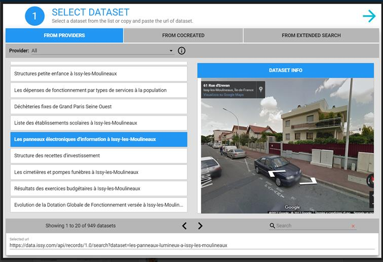
Choose to attach a Datalet to a comment
By Datalet button (circled in Figure.) near the post creation control, you can attach to your comment/post a new Datalet. Everyone, even without technical expertise, can create and share visualisation of a chosen dataset with few simply steps using the wizard that assists you step-by-step, through the creation (or modification) of a Datalet.
Datalets coming from "My Space"
You can also re-use the Datalets that you placed in "My Space".

4.2 Quick helper
A context helper, click on 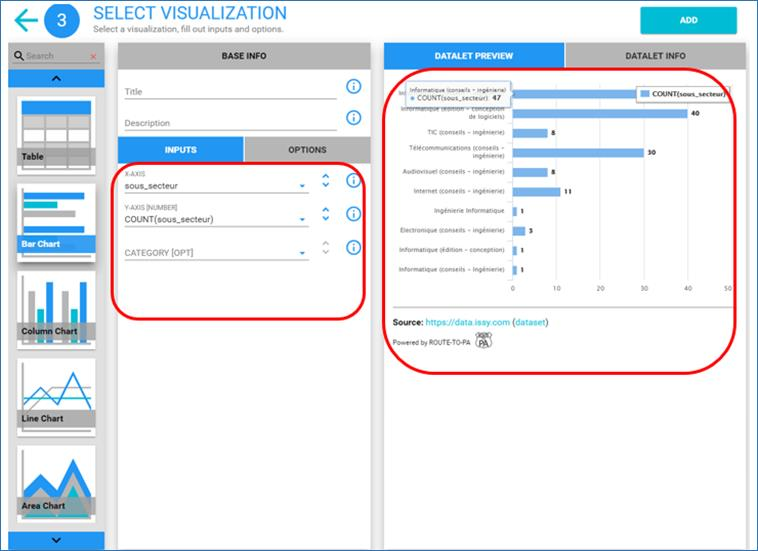 button, is available in the top right corner shows all the activities (e.g. posts, likes, photos etc...) to everybody, in chronological order, from all users (included those that are not my friends). You can filter only the activities of your friends in the network, clicking on the button "Show only my friends' activities". You can interact like in a traditional social network, by writing your status or commenting others' status. The main difference is that you can attach to your comments a Datalet, i.e. a component that interactively loads Open datasets and visualise them. You can choose to insert a new Datalet, or to reuse one that you saved in your personal "My space".
Figure 2: Helper for “What’s New” page
4.3 Agora
Agora is where each user can create a “Public room” to start a new discussion/debate that is open to all the users.
A context helper for Agora, click on button, is available on the top in the right corner.
Room shows a synthetic visualisation of its discussion by using colour, height and width as visual metaphors. The “Agora” shows the following characteristics:
· Level of discussion: it means that a “Public room” can have a wide discussion (defined as a discussion where many datasets are used) or not, and can have a deep discussion (i.e. one that has many comments) or not.
· Popularity: how popular is this public room in the SPOD? It depends on how many views has received in total, with respect to the others. It can be a hot room, something where many are viewing or a cold room, where not many are interested
· Recency: we want to know which was commented more recently
Agora shows a tile representation for showing up “rooms” as a map (see screenshot below).

4.4 Public Room
Click on a specific of public discussion room (see Figure 3) and move back up in the “Agora” when click on colored border of the “Public Room” and a set of features to enrich a contribution will be described in the following sections.

Figure 3: a first overview of a “Public Room” with datalet
List of all features available ((see screenshot below) in a public room:
· Import from “My space” (1)
· Add a datalet (2)
· Sentiment (3)

4.5 My space
My space is the place where each user can manage datalets, text and link in a personal area, as a reminder or for later use within a post (in What's new or in the Public rooms of the Agora).
A context helper, click on  button, is available on the top menu on right corner.
button, is available on the top menu on right corner.
“My space” page is a personal/private space for personal conversations.
The “My” space organizes and archives a list of item namely, text notes, datalets (i.e. visualization of datasets), URL (web pages) etc. for additional discussion.
Clicking on the  button, all features will be shown (see Figure 4)
button, all features will be shown (see Figure 4)

Figure 4: “My space” page shows all features
SPOD allows the creation of visualisations from Open Data (OD) stored on any external OD platform. In particular, SPOD platform supports CKAN/TET, OpenDataSoft platforms as well as other external sources.
SPOD supports the creation of visualisation from any other external dataset with the copy and paste of its URL. Users creates visualisations through a step by step usable Wizard named Controllet.


6 Co-creation Room
A new collaborative space to guide the user to constructive discussions within a small, private (by invitation) group (named Cocreation knowledge room) and to produce or create new datasets (named Cocreation data room).
The Cocreation knowledge room ( ) includes tools specifically designed for small groups such as
cocreating a template document for each of the three phases (e.g. Explore,
Ideas, Outcome) and annotation via post-it of the datalets to be discussed
(with synchronous notification for real-time discussions).
) includes tools specifically designed for small groups such as
cocreating a template document for each of the three phases (e.g. Explore,
Ideas, Outcome) and annotation via post-it of the datalets to be discussed
(with synchronous notification for real-time discussions).
The Cocreation data room () allows the users produce further datasets by either manipulating existing ones on the platform (helped with an import feature in cocreation process) or creating a new dataset (cocreation data process) that can be shared with other users creating new datalets for starting discussion in rooms of Agora. Users can discuss and add "likes" on produced datasets.
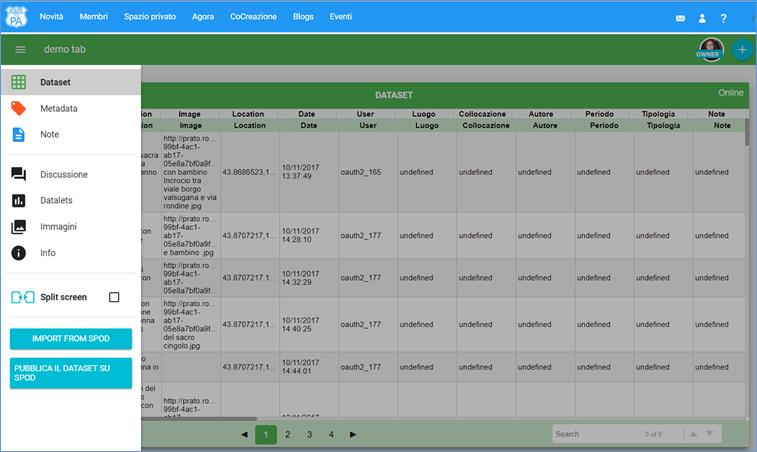
Figure 5: All features: (1) View all datasets; (2) Add a cocreation knowledge room; (3) Add a cocreation data room.

Figure 6: Create a Data or Knowledge room, take a look at all datasets
7.1.1 How to start in a room
To start in a room click 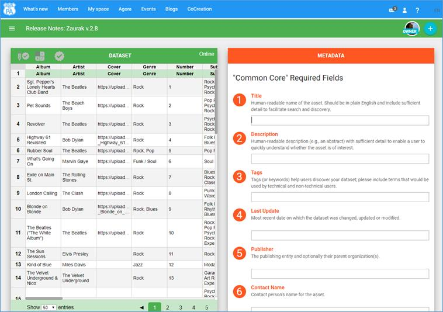 menù ( green color for data room and
green color for data room and  blue for knowledge room) on the on top left
side
blue for knowledge room) on the on top left
side
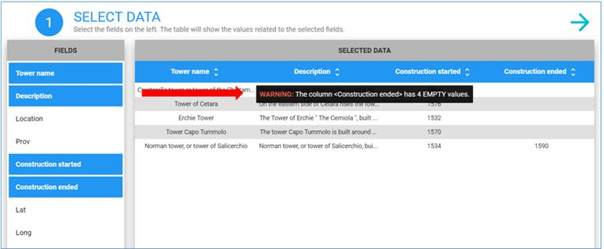
Figure 7: All features (show Explore, Ideas, Outcome, see Library, Add datalet, show Info, modify UI with Split screen) in a knowledge room

Figure 8: “What’s new” page in SPOD with custom widgets (Users, Agora Activities, SPOD help and Tweets) on the left side.
All features in a data room (show Dataset, Metadata, Notes, join to Discussion, Add datalet, show Info, modify UI with Split screen)
7.1.2 Co-creation room
A collaborative space to guide user to constructive discussions within a small, private (by invitation) group. It includes tools specifically designed for small groups such as cocreating a template document for each of the three phases explore, ideas, outcome and annotation via post-it of the datalets to be discussed (with synchronous notification for real-time discussions).
All features in a room:
· User Interface: enlarge, split the shared document, the datalet etc. into panes
· Add, delete a datalet
·
Add Notes ( )
)
· Import in My space, Export to HTML, PNG, RTF
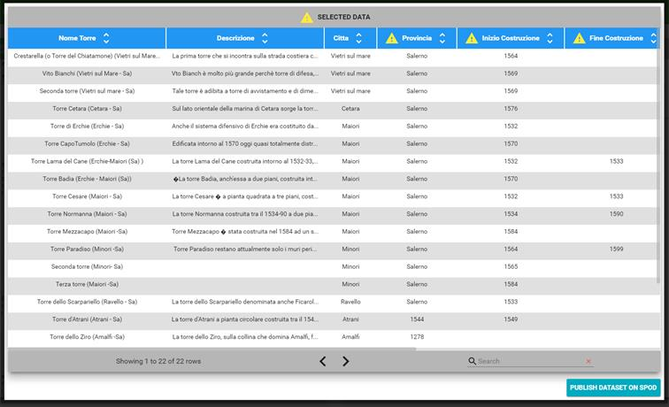
7.2 Cocreation data room
Cocreation data room is a collaborative, real-time spreadsheet; it combines the ease of authoring and multi-user editing of spreadsheet enriched with export/import csv files.
It allows citizens to collaborate on a spreadsheets over SPOD platform in realtime to create dataset with useful criteria for data validation, and to publish a dataset to share for further discussion in social collaboration tools in SPOD (e.g., in What’s New, Agora ).
Some functionalities:
· Create a New Sheet, Export CSV and Import CSV files, list of function (SUM, PRODUCT, AVG etc…).
· Collaboration on the same dataset with support of validation criteria: users can edit the same document at the same time. Everybody's changes are instantly reflected on all screens. Finally, the dataset will be publish it in a new provider, named SPOD provider available for Controllet to share it in social tools (e.g., Agora, What’s new).
· Each dataset can be authored providing also sources (in a shared text editor) and metadata
· When published, each dataset is accessible to build a datalet in the traditional ways (buttons in What’s new, Agora’s public rooms, etc.)
· Cocreation: a “View all dataset” new feature to show the datasets created and exported by groups in the cocreation data rooms, that allow to see the dataset, the notes and the link of the dataset and more..
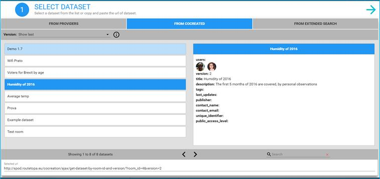
Figure 9: Create a dataset with data validation with notes and metadata for the dataset (1);
social and collaborative discussion with attached file (e.g., doc, pdf and spod_manual/images/images document) (2); add a new datalet (3);
show information about the room (4); customize the user interface (5),
finally publish the dataset to make it available among providers of the Controllet, named SPOD provider (6).
8.1 Available charts
The following table describes all available charts in SPOD platform:
|
Chart Types |
Description |
SPOD platform |
|
|
A table is a means of arranging data in rows and columns. |
|
|
A bar chart is a chart that presents grouped data with rectangular bars plotted horizontally with lengths proportional to the values that they represent. |
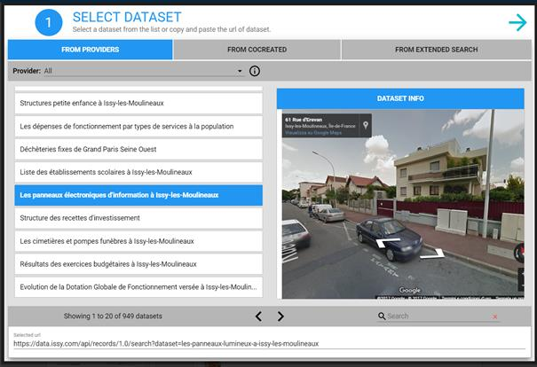 |
|
|
|
Column chart (and Stacked column chart) is a chart that presents grouped data with rectangular bars plotted vertically with lengths proportional to the values that they represent. |
|
|
|
A line chart is chart which displays information as a series of data points called 'markers' connected by straight line segments. A line chart is often used to visualize a trend in data over intervals of time. |
|
|
An area chart is a chart which displays graphically quantitive data. The area between axis and line are emphasized with colors and textures. Commonly one compares with the area chart two or more quantities. |
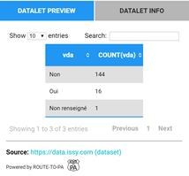 |
|
|
|
A heat map is a graphical representation of data where the individual values contained in a matrix are represented as colors. |
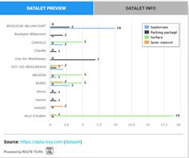 |
|
A pie chart is a circular statistical graphic, which is divided into slices to illustrate numerical proportion. In the pie chart, the arc length of each slice, and consequently its central angle and area, is proportional to the quantity it represents. |
|
|
|
|
A scatter chart is a type of plot or mathematical diagram using Cartesian coordinates to display values for typically two variables for a set of data. The data is displayed as a collection of points, each having the value of one variable determining the position on the horizontal axis and the value of the other variable determining the position on the vertical axis. |
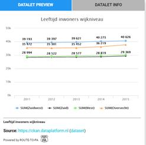 |
|
A bubble chart is a type of chart that displays three dimensions of data. Each entity with its triplet (v1, v2, v3) of associated data is plotted as a disk that expresses two of the vi values through the disk's xy location and the third through its size. |
||
|
A tree map is a chart for displaying hierarchical data by using nested rectangles. |
|
|
|
|
Map |
|
|
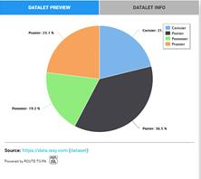 |
Geojson Map |
|


Blogs allow all users, also not registered users to vote (rates) on a specific post of Blogs. Only an user of SPOD as role as “bloggers” can create or modify a new post in the Blogs. A blog allows to add post, to allows votes (until now available only in prato.routetopa.eu )
The “What’s new” page displays Blogs to be shared among SPOD users.

Figure 14: Blogs among widgets (on the left side) in the What's new page.
Manual and video link are available, at the right bottom of the page in SPOD platform (see screenshot below).
Video Manual is a YouTube channel with videos to explain main functionalities in SPOD platform.

Figure 15: YouTube channel for SPOD platform
10.1 Context-sensitive help
In each page (e.g., Agora etc.), or in any widget of the UI (e.g, buttons etc..), a description is provided with detailed tooltips or a brief explanation that define precisely how to interact with the control/page in question.
The online help system in SPOD platform is available selecting , the question mark button, and a small window will popup with a short explanation of the item you selected. The features will be present in following pages:
· Public Room
· Agora
· My space
· Open Wall
· What’s new
· Members
· Cocreation (data and knowledge) room
Only a user of SPOD as role as “Events” can create or modify a new event (name, time, location, address, description, spod_manual/images/image, event/organiser website etc). A new event allow to add a datalet or import from the private space one own datalet.
A list of features available:
· Upcoming events
· Past events
· My events
· Invitations
· A datalet (a new datalet or select a datalet from private space (i.e., My space page)) can be embedded in the description of the event
· Add link to google maps at a particular location with a marker on a particular point (fro example, location of the event).
Only those users with assigned “Events” user role, will be able to execute actions specified in permissions of this role, such as for example create a new event.
Figure 16: Event with map to show the location, i.e. clicking on “map” link and geographic location appears
A new map datalet based on openlayer allows to visualize KML, WMS and GeoJSON data on a multi layer map (such as OSM Standard, Cycle, Transport, Landscape and Humanitarian).
A new map datalet based on openlayer that is capable to visualize KML, WMS and GeoJSON data on a multi layer map (such as OSM Standard, Cycle, Transport, Landscape and Humanitarian).
A 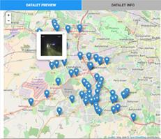new button has been introduced in My friends' activities/What's new that it opens the map authoring system.
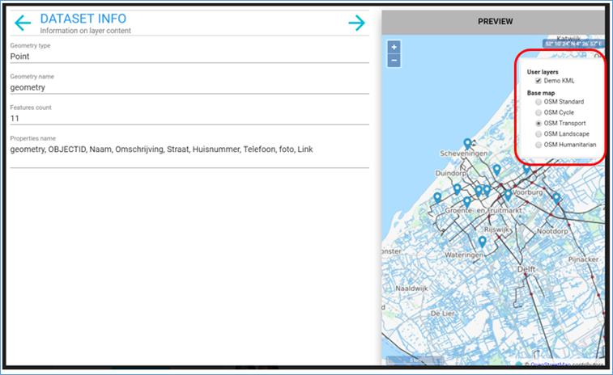
12.1 Language
On the top right corner, a menu allows to select a language (e.g., EN, FR, IT, NL) and a SPOD platform is available in English, Italian, Dutch, and French.
Glossary
A list of technological terms and icon button that will be used in the SPOD platform
|
Button |
Technological Terms/ Name |
Where in SPOD |
Function or description |
|
|
Datalet button |
What’s new, Agora, Cocreation room, Event, My space |
Attach to a comment/post a new Datalet, with few simply steps using the wizard that assists step-by-step, through the creation (or modification) of a Datalet. |
|
|
Open My space |
What’s new, Agora, |
Import any datalet or web link from My space |
|
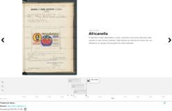 |
Upload an spod_manual/images/image |
What’s new, Cocreation room |
Upload an spod_manual/images/image file |
|
|
Map button |
|
Attach to a comment/post a new Map, with few simply steps using the wizard that assists step-by-step, through the creation (or modification) of a Maplet. |
|
|
Associated dataset provider |
What’s new and Controllet |
A list of open data provider suggested by the administrator. |
|
|
Open graph panel |
In Public Room |
Rooms are split vertically, on the left side there is a threaded chat (enabled for the use of open data) meanwhile on the right there is an area, dedicated to Graphs. |
|
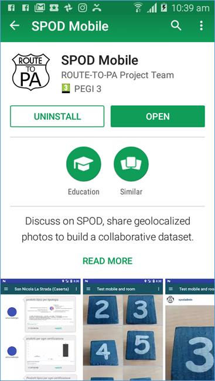 |
SPOD Helper |
On top right corner of the Top Menu |
In the “Open Wall” page, SPOD Helper shows the manual on line for the platform; in “What’s new” page, explains how add and share a datalet, where an user can post a datalet in a comment; in “My space” page explains how create different types of cards (e.g., a text, link or datalet card), in “Agora” page is the place where each user can create a “Public room” to start a new discussion/debate that is open to all the users. In Cocreation rooms explains all features in the rooms. |
|
|
Comments graph |
Public room |
Comments graph is tree of the comments, where each node represents a comment and the edges the parent-child relations. |
|
|
Datalets graph |
Public room |
Datalets graph is graph of datalets, where each node represents a datalet, and edges join datalet that uses the same dataset (but possibly with a different visualization). |
|
|
Users graph |
Public room |
Users graph is graph of users, where each node represents a user that is participating in the discussion, and an edge joins to users that interacted (one answered a comment of the other). |
|
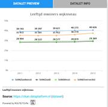 |
Opinions graph |
Public room |
Opinions Graph is the comments graph with the all the green (agree) adjacent comments are emphasized and grouped together |
|
|
Add |
Agora and My space |
Add a new room or add a new card |
|
|
Link card |
My space |
Add a link in My space |
|
|
Text card |
My space |
Add notes in My space |
|
|
Open Data Visualization |
My space |
Preview of a card in My space |
|
|
Create a Decision Tree |
My space |
Add a decision tree in My space |
|
|
Modify card |
My space |
Modify a card |
|
|
Delete card |
My space |
Delete a card |
|
|
Open My space |
Public room |
Import a link or notes from My space |
|
|
Upload an spod_manual/images/image or doc, pdf files |
Cocreation room |
Upload a document/spod_manual/images/image in a post/comment |
|
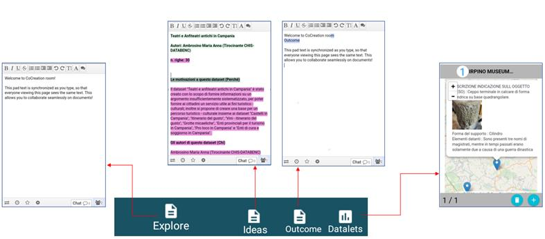 |
Opinion Button (Neutral) |
Public room |
Every time you add a new post in the chat, you can express you opinion by selecting from the Opinion Button: Neutral (Blue color node in the graph) |
|
|
Opinion Button (Agree) |
Public room |
Every time you add a new post in the chat, you can express you opinion by selecting from the Opinion Button: Agree (Blue color node in the graph) |
|
|
Opinion Button (Disagree) |
Public room |
Every time you add a new post in the chat, you can express you opinion by selecting from the Opinion Button: Disagree (Blue color node in the graph) |
|
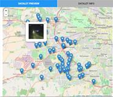 |
Info about the room |
Cocreation room |
You can take a look at all information (e.g., Owner, Subject, Description etc.) of a new created room |
|
|
Open Button |
Cocreation room |
Every time you add a new dataset in the Cocreation data room, you can see any dataset in the cocreation room |
|
|
Download as CSV Button |
Cocreation room |
Every time you add a new dataset in the Cocreation data room , you can download the dataset as CSV file |
|
|
Copy link Button |
Cocreation room |
Every time you add a new dataset in the Cocreation data room, you can copy and paste the address (URL) of the dataset |
|
|
Download docs Button |
Cocreation room |
Every time you add a new dataset in the Cocreation data room, you can download the notes of the dataset as html file |
|
|
View all dataset Button |
Cocreation room |
You can take a look at all datasets created in the Cocreation data room and published in the SPOD platform |
|
|
Add a Cocreation data room Button |
Cocreation room |
You can create a new Cocreation data room |
|
|
Add a Cocreation knowledge room Button |
Cocreation room |
You can create a new Cocreation knowledge room |
|
|
Open menu |
Agora, Cocreation room |
You can open a menu by clicking the upper-left corner |
|
|
Dataset |
Cocreation data room |
You can write a shared spreadsheet to enter data, to import and export a document in CSV format. |
|
|
Metadata |
Cocreation data room |
You can add metadata to the dataset.
|
|
|
Note |
Cocreation data room |
You can add notes to the dataset (e.g., fonts, bibliography etc...) |
|
|
Discussion |
Cocreation data room |
Discussion room and notifications: in discussion room, a new message is notified with an icon with the counter of number of received and unread message. |
|
|
Datalet |
Cocreation data room |
You can create interactive map or others charts (e.g., table, histogram etc.) of a dataset (named datasets). |
|
|
Info about the room |
Cocreation data room |
You can take a look at all information (e.g., Owner, Subject, Description etc.) of a new created room |
|
|
Split screen |
Cocreation data room |
You can choose the type of display, i.e you can view one at a time (eg only the spreadsheet) or two features at the same time (e.g. the spreadsheet on the left side and discussion room on the right side). |
|
|
Publish dataset |
Cocreation data room |
|
|
|
Add a new user |
Cocreation data room |
You can invite new users to the room |